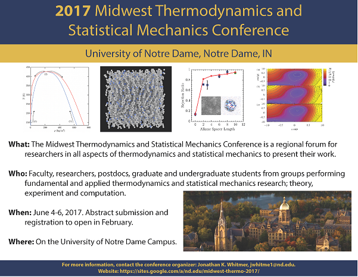

June 4-6, 2017 at the University of Notre Dame
The conference, in its 30th year, focuses on the latest developments in experimental, computational and theoretical thermodynamics and statistical mechanics research.
Visit the website of the conference. Contact: Jonathan Whitmer

May 18 - 19 in Arlington, VA
Advancing and Accelerating Materials Innovation Through the Synergistic Interaction among Computation, Experiment, and Theory: Opening New Frontiers
Workshop organized by Giulia Galli (University of Chicago) and Mercouri Kanatzidis (Northwestern University) at Long Island, NY on May 15 - 17, 2017.
For questions about logistics, contact Eunice Toro (☎ 631-591-4000).
Early Career Network National Meetup at the APS March Meeting 2017, New Orleans, LA
We organized the first 2017 national meetup of the Early Career Network (ECN)! ECN is a group of early career scientists from current DOE funded Energy Frontier Research Centers (EFRC), Energy Innovation Hubs, and Computational Materials Science centers. ECN is promoting more graduate student and postdoc activity within the centers through webinars and social events at national conferences.

"Scalable, Efficient All-Electron First-Principles Simulation Approaches to Materials, Molecules, and Large Nanostructures"
Speaker: Volker Blum, Duke University
February 16, 2017 - 11AM
Abstract
One year anniversary of the National Strategic Computing Initiative (NSCI) workshop
Friday, July 29, 2016, Eisenhower Executive Office Building, Washington D.C.
The workshop will bring together leaders from industry, academia, and government to learn about the NSCI’s first year of progress. The White House would like to hear individual views from attendees about the opportunities for discovery and innovation that NSCI will afford, as well as solutions to the challenges that the high-performance computing community faces in achieving the visionary goals of the initiative.
Seminar: Which Superlattices are Possible with Nanocrystals?
By Michael Engel
Institute for Multiscale Simulation, Friedrich-Alexander-University Erlangen-Nuremberg, Germany
August 15, 4PM - GCIS E223
Abstract
The assembly of functional nanoscale building blocks has led to the development of novel materials. Nanocrystals are particularly promising because their shape and ligand shell can be tuned continuously through control of the synthesis procedure and the assembly conditions. Just like atoms, nanocrystals nucleate ordered seeds that gradually grow into superlattices. Interestingly, but maybe not surprisingly, many superlattices with nanocrystals are iso-structural to crystals found with atoms and vice versa. In this presentation we address this relationship. First we demonstrate how we can reproduce and understand experimentally observed superlattice formation in computer simulations for nanocrystals with anisotropic shape and in binary mixtures. By systematic searches in parameter space, coupled with advances in coarse-graining models, we aim to expand the library of achievable superlattices. Many superlattices iso-structural to crystals of the chemical elements are rediscovered plus some new, exotic ones.